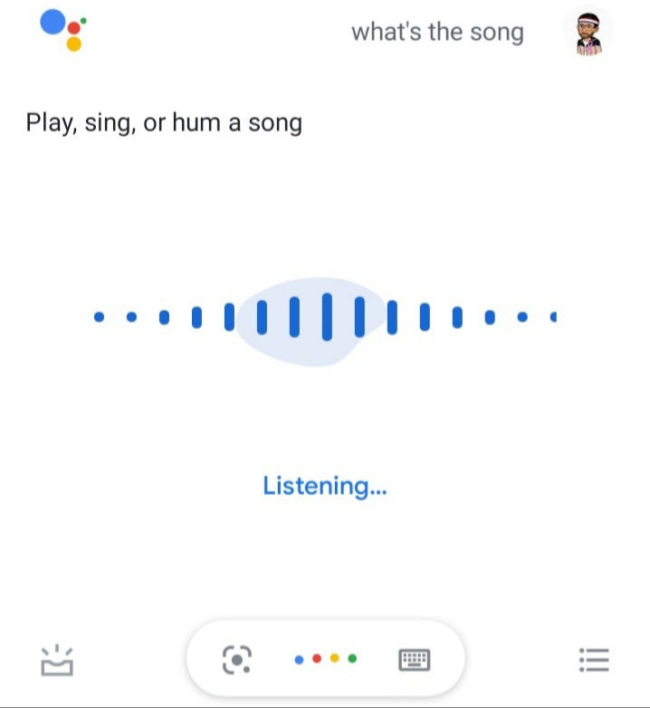
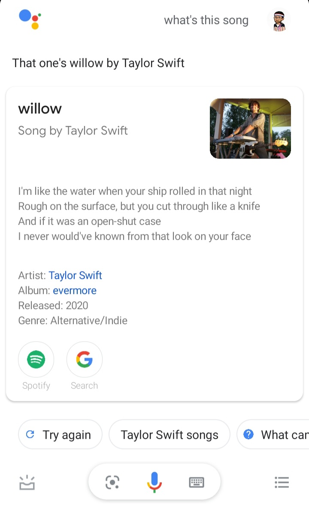

When most pepole hear "Machine learning" they picture a robot: a deadly terminator or if you are an avengers fan then it would be Ultron.
But Machine learning is just not a fantacy, it's been around us for a while now. The only fact is that we are not recognizing it. Below is an example of an ML application, some of you may have heard it before.
Example
Optical character Recognition(OCR) or optical character reader is the electronic or mechanical conversion of images of typed, handwritten or printed text into machine-encoded text, whether from a scanned document, a photo of a document, a scene-photo or from subtitle text superimposed on an image, more on OCR.
or in simple words Optical Character Recognition, or OCR, is a technology that enables you to convert different types of documents, such as scanned paper documents, PDF files or images captured by a digital camera into editable and searchable data.
The OCR uses Convolutional-Recurrent Neural Network (CRNN). These columns are fed into a deep-bidirectional long short term memory (LSTM) cell, which provides a sequence, identifying the relationship between the characters.
Machine Learning is science (and art) of programming computer so they can learn from data.
According to wikipedia here is a slightly more general defination:
Machine learning is field of study that gives computers the ability to learn without being explicitly programmed.
-Arthur Samuel, 1959
Want a little help in organizing your calendar? Want to know the best Italian restaurants near your home? Want to book movie tickets on the go? Well, never fear!!! Google Assistant is here to make your life easier! It is basically a personal assistant that is enabled using a combination of Google Knowledge Graph, Image Recognition, and Natural Language Processing.
The Google Assistant is envisioned as a chatbot by Google which can be connected to your phones, TVs, speakers, etc. with the ability to actually have a conversation with you. Here the Google Knowledge Graph provides information gathered from various sources while Natural Language Processing allows the Google Assistant to interact with you and formulate its answers according to your questions.
Wake up your Google Assistant or Google Home by saying "Hey google" or "Ok google" and then try to ask "What's this song?"
In my case, I have played willow song..
This speech recognition, which requires audio samples, since they are long and complex sequences, they are typically processed using RNNs, CNNs or Transformers.
In case you are a millennial, I am sure you are a selfie addict! And of course, you use Google Photos a lot if you are an Android user as well. And it’s no shock that you do! Google Photos allows you to back up all your photos in a single location even if they were shot from multiple devices and it also offers lots of other cool effects using Machine Learning.
For Example, Google Photos also automatically creates albums of photos taken during a specific period without any input from you. And that’s not all, it can also select the “best photos”. And in case you haven’t sorted all your pictures into albums, you can also search for them by typing in names. Suppose you want to find a picture with your dog, type in “Dog” and you will get all the dog pictures! This is done using Image Recognition, wherein Deep Learning is used to sort millions of images on the internet in order to classify them more accurately. So using Deep Learning, the images that are classified as “Dog” in your Google Photos are displayed.We will discuss about that in later chapters.